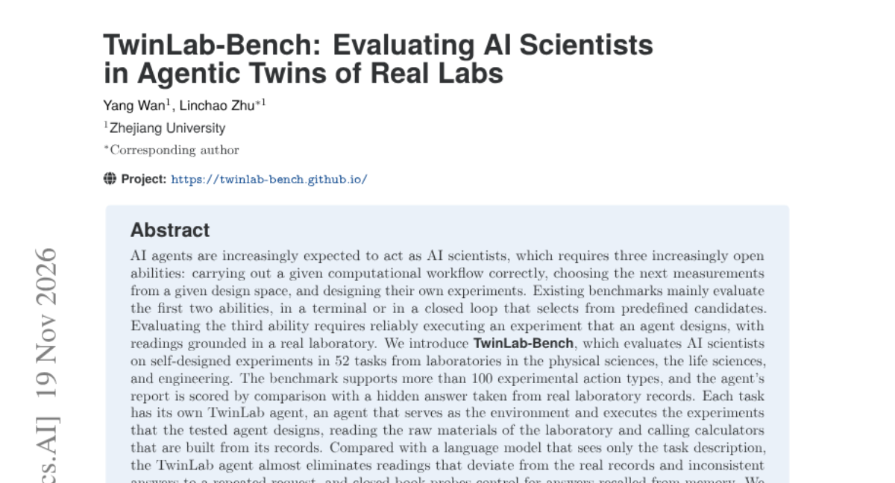
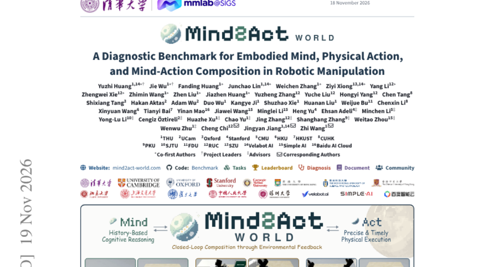

报道称Lean认证Claude证明黎曼猜想无误
该报道声称AI模型Claude给出的黎曼猜想证明获Lean官方认证。消息仅见于媒体标题，未提供证明仓库、认证范围或同行评审信息，是否构成数学意义上的证明仍未知。 机器之心 · 官方 RSS：刚刚，Claude参与证明黎曼猜想，通过独立验证！
该报道声称AI模型Claude给出的黎曼猜想证明获Lean官方认证。消息仅见于媒体标题，未提供证明仓库、认证范围或同行评审信息，是否构成数学意义上的证明仍未知。 机器之心 · 官方 RSS：刚刚，Claude参与证明黎曼猜想，通过独立验证！
据标题，新加坡国立大学推出名为System One的模型评测基准，关注能力的覆盖范围与决策稳定性。材料未交代基准的具体任务设计、参评模型和指标结果，能力“多宽、多稳”的判断仍有待细节验证。
标题称OpenAI对旗舰GPU设计作出大幅调整，并称AMD直接送厂流片。这是涉及芯片合作与制造流程的媒体说法，材料未说明具体芯片用途、流片节点与是否已投产，相关结论尚未核实。
媒体报道称GPT-6 Astra在有限域上的黎曼猜想取得突破。材料只有标题，未给出证明形式、验证方式或独立复核，属待验证的模型能力宣称，不能据此认定数学问题已被解决。
标题称Anthropic以2.7亿规模的条件争抢计算机本科生，并称OpenAI经历艰难一周。报道未交代金额是总包、个体薪酬还是其他口径，也缺公司确认，人员与竞争影响尚待核实。
该条以“外星智能”为喻，称AI联手人类解决一项百年数学难题。材料未说明具体难题、合作方式和验证结果，属媒体叙事性表述，需回到原始论文或形式化证明核实。
标题提出为何黎曼猜想偏偏由Levent Alpöge证明，暗示其与相关证明工作有关。材料未说明其角色、证明内容与认证状态，关键事实仍未知，不宜视为已完成的数学成果。
据标题，一项发表于Nature的研究用电刺激迷走神经，使糖尿病大鼠恢复正常血糖。材料未提供具体刺激参数、样本量和长期效果，能否推及人类仍需验证。
今日公开材料集中在两类高关注度进展：一是围绕数学难题的模型能力宣称，二是AI产业与硬件动向。数学相关条目相互关联，但标题把“Lean官方认证”“攻克有限域黎曼猜想”等表述放在显著位置，均属研究者或媒体主张；在未见形式化证明、独立审稿与可复现细节前，不宜当作已确认的证明。阅读时建议优先查看基准与研究方法条目，区分评测结论、传闻与商业动作；对涉及具体数字和人员薪资的报道，需等待一手公告验证。[1][2][3][4][5][6][7] 硬件与科研报道提供了不同角度的观察：芯片设计合作与神经调控控糖研究分别代表工程与生命科学方向，但材料仅有标题，关键方法、样本与结果细节尚缺。[3][8]

推荐理由 该摘要明确提出讨论困惑度如何衡量AI模型进展，值得精读以核查其提出的共享评测方法是否有可验证的指标定义与论证依据。
DeepSeek 中文选读卡
这份研究围绕困惑度（perplexity）如何衡量AI模型进展展开，并提出它或可帮助开发者就新兴能力的评估形成共同方法。摘要只给出这一概念性主张，未说明具体研究设计、所用模型或对照条件；目前看不出有实验比较，只能视为方法讨论。 作者报告的证据仅限于主张困惑度可作为进展指标、并有助于建立共享评估路径，未提供任何数值、比较基线或图表信息。 适用范围尚不明确：摘要未交代任务类型、模型规模或评测条件，仍缺可复核的实证结果与外部验证。社区若出现相关转述，只能当线索。精读时值得核查：该文是否把困惑度下降直接等同于能力提升，以及有无对照实验支持这一推断。

推荐理由 该摘要显示TwinLab-Bench用52个任务评估AI科学家自主设计实验，最强模型仅45.0分，值得精读以核对任务设计、隐藏答案评分机制及失败分析是否支持其结论。
DeepSeek 中文选读卡
该研究提出 TwinLab-Bench，用于评估AI科学家自主设计实验的能力；任务覆盖物理科学、生命科学和工程领域的52项实验，支持逾100种实验操作类型，并以真实实验室记录中的隐藏答案作为评分依据。作者报告称，与仅见任务描述的模型相比，TwinLab代理大幅减少了偏离真实记录的读数和重复请求下不一致的回答，并用闭卷测试控制记忆性作答；前沿模型在该基准上仍表现困难，最强模型得分为45.0。适用范围限于基准所述的实验类型和记录条件；仍缺少独立复现和外部验证。精读时值得核查：隐藏答案的评分规则如何界定，以及45.0分对应怎样的分数尺度。没有对照或实验条件时应直接说明。
评估 AI 帮助科研的能力，先分清测量的是答题得分、节省的时间，还是由独立实验验证的结果。观察样本如何选取、有没有对照以及评价数据是否泄漏。
评估 AI 帮助科研的能力，先分清测量的是答题得分、节省的时间，还是由独立实验验证的结果。观察样本如何选取、有没有对照以及评价数据是否泄漏。
有公开出处的英文主题讲解，可先补概念，再回到当前条目。

推荐理由 该摘要报告Mind2Act World将推理与执行分离诊断，最强智能体在组合任务上仅12.0%，值得精读以核查三视图与诊断工具如何归因失败来源。
DeepSeek 中文选读卡
这条基准要分清“脑”（据历史做决策）、“手”（精确及时执行）和二者通过环境反馈组合；本文接着问：现有基准能否判断失败出在哪一环。研究提出Mind2Act World，含30个模拟操作任务、5类应用域，每任务3难度、2场景设置，共180种配置，分Mind、Act、Mind2Act三个视图，并设诊断工具归因失败回合。作者报告：单视图能力不能迁移到组合视图；最强智能体在Mind与Act分别成功52.7%和39.0%，在Mind2Act仅12.0%；它保留任务状态但难以持续接触，端到端策略能执行练过的动作却几乎不保留状态。目前限于模拟任务与所测系统，诊断归因准确性、真实机器人迁移及对照条件仍需核查；该结果无独立复现，不宜外推。精读时应核查诊断归因依据和失败分类标准。
语言模型智能体在多步任务中根据观察决定下一步行动，调用工具后再读取结果。理解这条循环，有助于区分计划出错、工具调用出错和反馈不足。
语言模型智能体在多步任务中根据观察决定下一步行动，调用工具后再读取结果。理解这条循环，有助于区分计划出错、工具调用出错和反馈不足。
有公开出处的英文主题讲解，可先补概念，再回到当前条目。